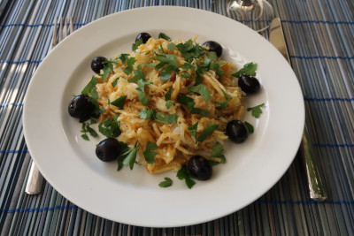

Receita de Bacalhau à Brás

Um pouco de história...
“Bacalhau à Brás (ou também Bacalhau à Braz) é um típico prato português de bacalhau.
Sendo um dos pratos mais populares confecionados com este
peixe, consiste em bacalhau desfiado, batata palha frita, cebola
frita às rodelas finas, ovo mexido, azeitonas e salsa picada.
É muito consumido em Portugal e também em Macau. O excelente sabor depende da relação dos componentes da receita, principalmente a quantidade de cebola em relação ao bacalhau e o azeite usado para efetuar este prato. A receita foi criada por um taberneiro do Bairro Alto, em Lisboa, de nome Brás (ou Braz, como era uso escrever nessa época).”
fonte Wikipedia
Receita:
| Características da receita |
| Dificuldade |
Custo |
Tempo |
Doses |
| Fácil |
Baixo |
40 minutos |
4 pessoas |
Ingredientes:
- 400 g de batata palha
- 6 Ovos
- 500 g de bavalhau desfiado
- 2 cebolas
- 3 dentes de alho
- Salsa q.b.
- 1 dl
- 0,5 dl de azeite
- Sal e pimenta q.b.
- Azeitonas q.b.
Modo de preparação:
- Demolhe o bacalhau de um dia para o outro.
- Descasque e lave as cebolas e corte-as as cebolas em meias luas finas.
- Descasque e lave os dentes de alho. pique-os finamente.
- Bata os ovos com leite.
- Num tacho aqueça o azeite. junte as cebolas e os dentes de alho.
- Deixe refogar até que fique douradinho.
- Junte depois o bacalhau e deixe cozinhar mais um pouco até que fique com o aspeto de cozinhado.
- Juntes depois as batatas, evolva e regue com os ovos.
- Deixe cozinhar, mexendo sempre.
- Retire do lume e retifique os temperos.
- Polvilhe com salsa picada e as azeitonas.
- Decore a gosto e sirva.
Gostou desta receita? Deixe o seu e-mail para receber a nossa newsletter.